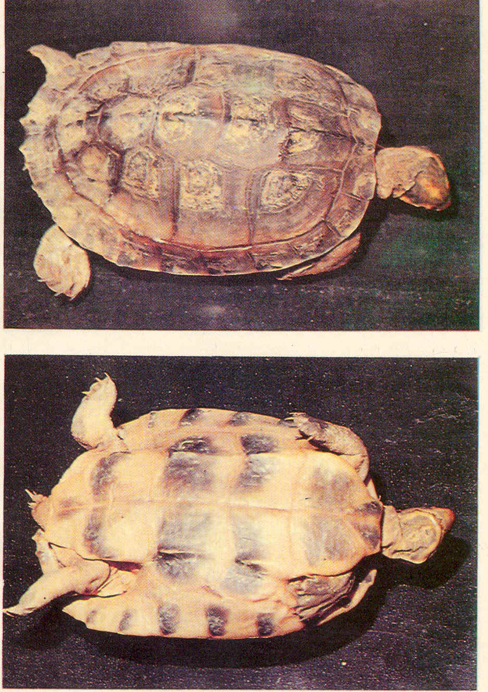

|
Digitized
Inventory of Animal Resources: Reptilia |
Kachuga kachuga
Taxonomic
Details
----- Scientific Name
----- Classification
----- Synonyms
----- Common Names
Other
Biological Details
----- Habit and
Habitat
----- Distribution
---------- Extent of
Occurrence
---------- Area of
occurrence
---------- Altitude
---------- Population
-----
Conservation Status
-----
Diagnostic
Features
-----
Breeding system
Miscellaneous
Information
Literature
Scientific Name : Kachuga kachuga ( Gray 1831 )
Family :
Classification:
Synonyms:
Common Names:
Bengal Roofed Turtle
Entirely aquatic and inhabits freshwater bodies with sufficient macrophytic vegetation. Mainly herbivorous.
Distribution: Ganga River system of Bengal, Bihar and Uttar Pradesh in India
Extent of Occurrence
River Ganges
and tributaries
Area of occurrence: Ganga River system of Bengal, Bihar and Uttar Pradesh
Altitude:
Population:
Status not
available
Conservation status:
Extremely
vulnerable
DIAGNOSTIC
FEATURES:
Size : Moderately large turtle, females ( maximum length 29 cm ) are larger than males
Body : Head moderately long, snout pointed, slightly upturned, shorter than the orbit and projecting beyond the lower jaw. Skin of the posterior portion of the head is divided into shields. Limbs are with fully and broadly webbed digits and have narrow, elongated scales.
Limbs : Fore limbs with five claws.
Tail : Tail remains short throughout life.
Carapace : Depressed, unicarinate, the keel is interrupted and remains most prominent upon the second and third vertebral shields, where it terminates in a pointed knob like structure in juveniles but disappears gradually in adults. Posterior margin of the carapace is crenulated in the young. Plastron long and narrow, considerably narrower than the opening of the shell, angulate laterally in the young, truncate anteriorly, openly emarginated or notched posteriorly; the width of the plastral bridge exceeds the length of the third lobe of the plastron.
Colour : Dorsal colouration is olivaceous or brownish. Ventrum yellowish. Neck light brown, with seven reddish longitudinal stripes. Lateral aspect of head bluish, throat with a pair of oblong red or yellow markings. Top of the head in male exhibits brilliant colouration during breeding season.
Breeding system:
Nesting : Breeding season is during March and the eggs are laid on the sandy banks of the river Ganges.
Miscellaneous Information Threat
Population is under decline as the ecology of the Ganges has changed considerably, by way of construction of dams, reservoirs and removal of macrophytic vegetation.. Nesting area disturbed due to sand mining, removal of macrophytes thus caused scarcity in food for these turtles.
